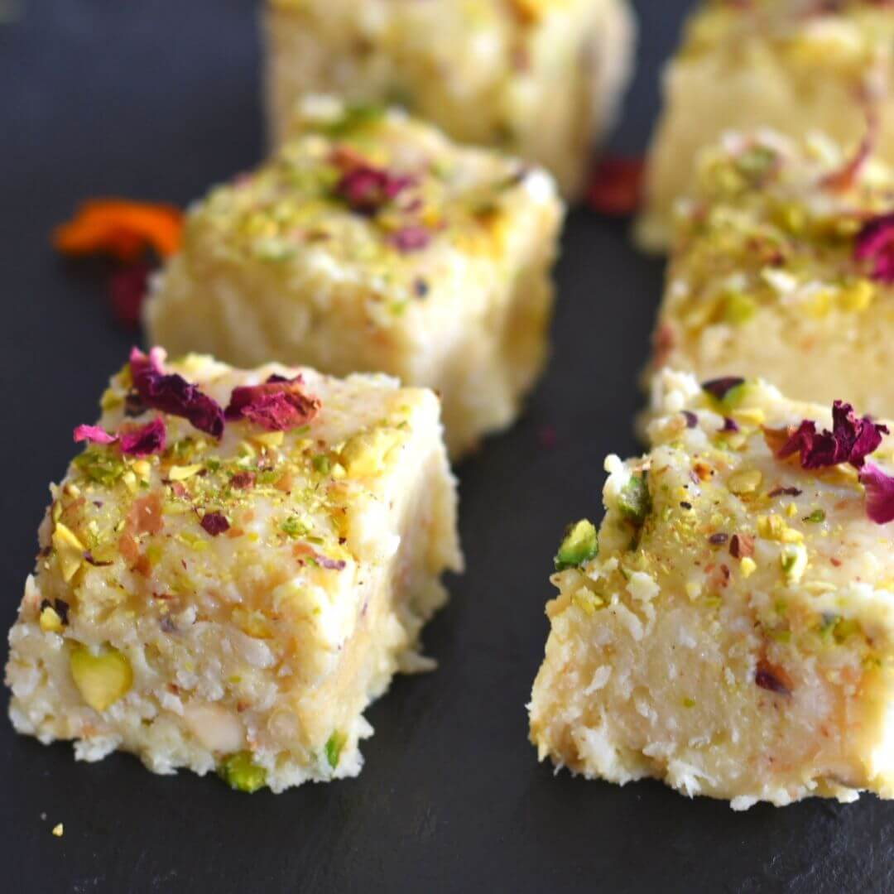

Gulab jamun
Ingredients
- 1 Nestlé MILKMAID Mini
- 200 gm flour
- 600 gm grated paneer
- 20 gm Sooji/Rava
- half spoon Baking Powder
- half spoon baking soda
- oil
- water
- sugar
- crushed cardomom
Recipe
- Boil sugar and water to prepare syrup and remove from the fire. Add cardamom and keep aside to cool.
- In a mixing bowl, add the flour, paneer, sooji, Nestlé MILKMAID, baking powder, and baking soda. Mix gently to make a soft dough. Do not knead too much.
- Divide the mixture into 30-35 portions and gently roll into round Gulab Jamuns. Fry in the oil at a very low flame till golden brown.
- Add the fried Gulab Jamuns to the prepared sugar syrup. Once all the Gulab Jamuns are in the sugar syrup, bring it to a boil and remove from the flame.
- serve warm

Barfi
Ingredients
- 300 ml condensed milk
- 2 1/2 cup milk powder
- 2 tablespoon ghee
- 1 cup water
- 1 teaspoon powdered green cardamom
- 1 handful pistachios
Recipe
- Take a large bowl and add milk powder to it along with milk. Make a rigid dough using these ingredients. Once done, keep the dough in the freezer and freeze it for at least for 20 minutes
- Take a large bowl and add milk powder to it along with milk. Make a rigid dough using these ingredients. Once done, keep the dough in the freezer and freeze it for at least for 20 minutes
- Add the grated dough to this pan with water. Mix well and stir in cardamom powder in the pan. Cook this mixture until the water dries out and the mixture accumulates in the centre of the pan.
- Pour this prepared mixture into a greased tray and garnish it with almonds and pistachios. Let the mixture cool down and cut the barfi into desired shapes. Garnish it with silver varq and serve!
